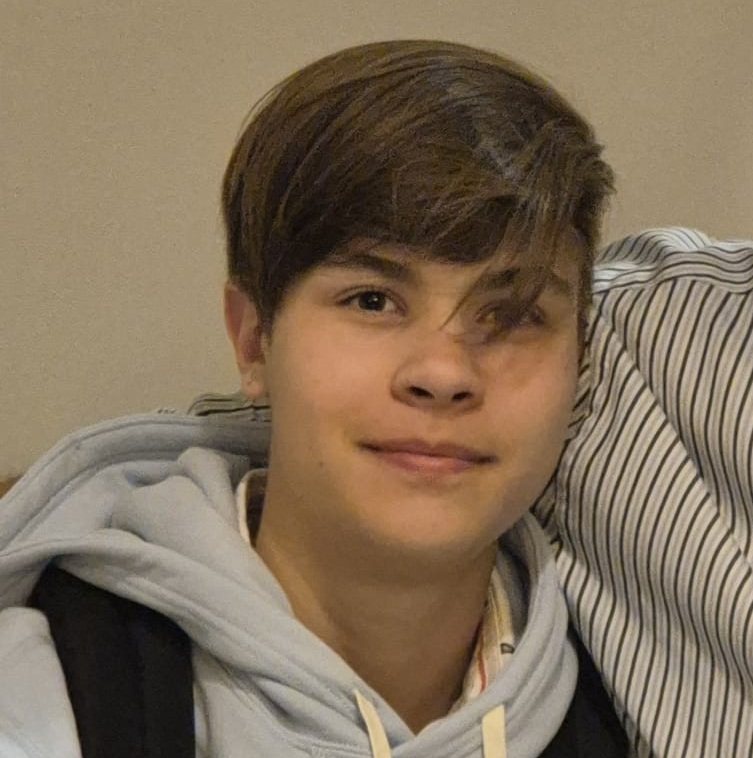

Jamie van der Maat

Hallo, ik ben Jamie van der Maat.
Ik ben 18 jaar en ik ben een student Software Developer op het Ter AA Helmond.
Op dit moment zit ik in mijn laatste jaar van deze 3-jarige opleiding op MBO niveau 4.